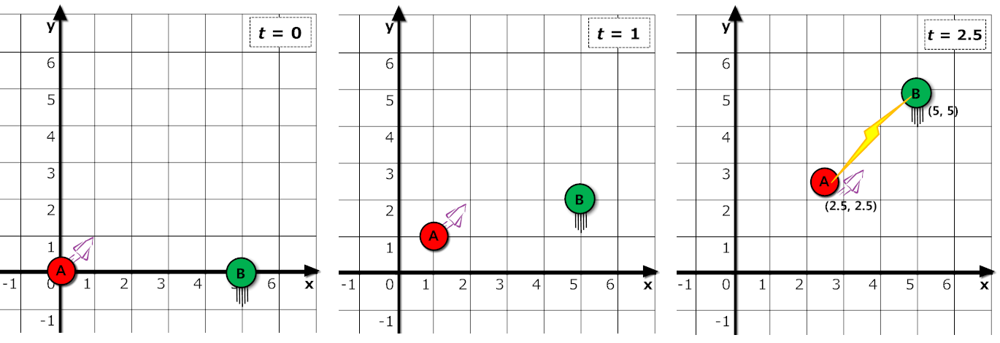

It is not widely known, but outside of playing Hearthstone and watching NGNL, Ben is actually a quantum mechanics expert. He is very interested in string theory, but he heard that in order for string theory to be mathematically consistent, the concept of more than just 3 spacial dimensions must be introduced. While fooling around on Wikipedia all day (his primary research routine), he discovered that "flat space string theories are 26-dimensional in the bosonic case while superstring and M-theories turn out to involve 10 or 11 dimensions for flat solutions." Whatever that meant, Ben read it and was in hysterics.
"HA", he exclaimed. "Physicists are such noobs these days. 10 dimensions? 26 dimensions? How about 100000 dimensions. Ain't nothing I can't handle."
While Ben was probably referring to his ability to solve physics problems in 100000 dimensions, the universe had heard this statement and was not impressed. That night while Ben was still in his dreams, the fabric of space-time in his realm had transfered him to N-D Land (where the number of dimensions N ≤ 100000, as Ben boasted he could handle). After waking up, Ben finds himself on a rocket-ship hurtling through space.
The first thing he noticed was that everything around him is extremely…weird. He was able to glide around the ship in so many miraculous directions that he never thought existed. Just as his puny 3D brain was busy being overwhelmed by the new change of universes, a series of loud beeps from the front of the ship caught his attention. Approaching the dashboard, he saw the flashing message: ENERGY LEVEL: CRITICALLY LOW. Ben looked out the window and noticed nothing but pitch darkness. After getting the Newton's first law question wrong on his physics test, he learned that a constantly moving object will not stop unless acted on by any external, unbalanced forces. That means, Ben's ship is bound to go on forever until it gets absorbed by a star, torn apart by a black hole, or demolished by a planet, space junk, or whatever obstacles occupy the peculiar universe. His ship's energy will soon run out, so there is no chance of him turning it around when these things happen. He'll just have to accept his sad fate.
"How unfortunate", he thought to himself, "that such a brilliant young physicist like me shall perish in the abyss of this unfamiliar world." He let out a sigh as he stared out of the spaceship window into the darkness of outer space.But wait! Just as he was about to give up hope, he noticed a faint glow in the distance. Alas – it's a star! But… why is it moving so quickly!?! Ah yes, that's when Ben remembered from one of his Wikipedia readings that this is probably a hypervelocity star, that is, a star moving so quickly that its velocity exceeds the escape velocity of its galaxy.
"What massive amounts of energy must be involved with such a majestic cosmic entity", Ben thought to himself, "there is hope now!"
After some digging through manuals, Ben discovered that, sure enough, his rocket-ship had integrated energy collection capabilities. The ship is able to capture the radiant and thermal energy of any nearby object — the closer the object, the more energy will be transfered over to the ship! The encounter with this star might be his only chance to repower ship, so Ben better make the absolute most out of the energy transfer or risk dying in this realm of a bajillion dimensions.
In N-D Land, every point in space can be represented using a coordinate of N numbers (x1, x2, …, xN). We shall let two such N-dimensional points A and B respectively represent the locations of Ben's ship and and the HV star at t = 0. Ben's velocity is represented by the vector VA = (VA,1, VA,2, …, VA,N). This means that during every unit of time, the value xi describing Ben's position in the i-th dimension will increase by VA,i. Similarly, the velocity of the star can be represented by the vector VB = (VB,1, VB,2, …, VB,N).
Knowing these pieces of information, Ben would like to find out just how close he is ever going to get to the star, and at what time he will get the closest. Please help him make the most of this energy transfer!
The 1st line contains a single integer N (2 ≤ N ≤ 100000) , the number of dimensions.
The 2nd line contains N integers, the coordinates of A, representing Ben's initial position at t = 0.
The 3rd line contains N integers, the coordinates of B, representing the HV star's initial position at t = 0.
The 4th line contains N integers, the velocity vector VA, where the i-th integer represents the distance moved in the i-th coordinate of point A during each unit of time after t = 0.
The 5th line contains N integers, the velocity vector VB, where the i-th integer represents the distance moved in the i-th coordinate of point B during each unit of time after t = 0.
Each number in the input will be between −106 and 106.
Output a single nonnegative real number t – the time at which the Euclidean distance between Ben and the star will be minimized.
If the time is not unique, output the smallest value of t ≥ 0 such that Ben and the star's Euclidean distance will be minimized.
Your output will be considered correct if it is accurate to ±10−5 (5 digits after the decimal).
2 0 0 5 0 1 1 0 2
2.5
In this example, Ben happens to have been transferred to 2D land. Ben starts out at (0, 0) and the star starts out at (5, 0). Every unit of time, Ben moves 1 unit in the positive x-direction and 1 unit in the positive y-direction. Every unit of time, the star moves by 2 in the positive y-direction. Ben performs the energy transfer at t = 2.5, when the ship will be at (2.5, 2.5) and the star will be at (5, 5). This is the closest they'll ever be, with a distance of √((5 − 2.5)2 + (5 − 2.5)2) ≈ 3.53553. The scenario is depicted in the figure below.

4 0 0 0 0 0 0 0 1 0 0 0 -1 0 0 0 -1
0
In this example, Ben has been transferred to 4D land. He is located at (0, 0, 0, 0) and the star is located at (0, 0, 0, 1). Every second, Ben and the star will both move −1 in the 4th dimension. This means that Ben and the star will forever be 1 unit of distance apart, so he might as well make the energy transfer immediately, at t = 0.